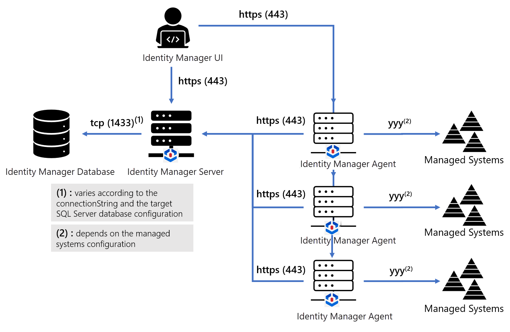
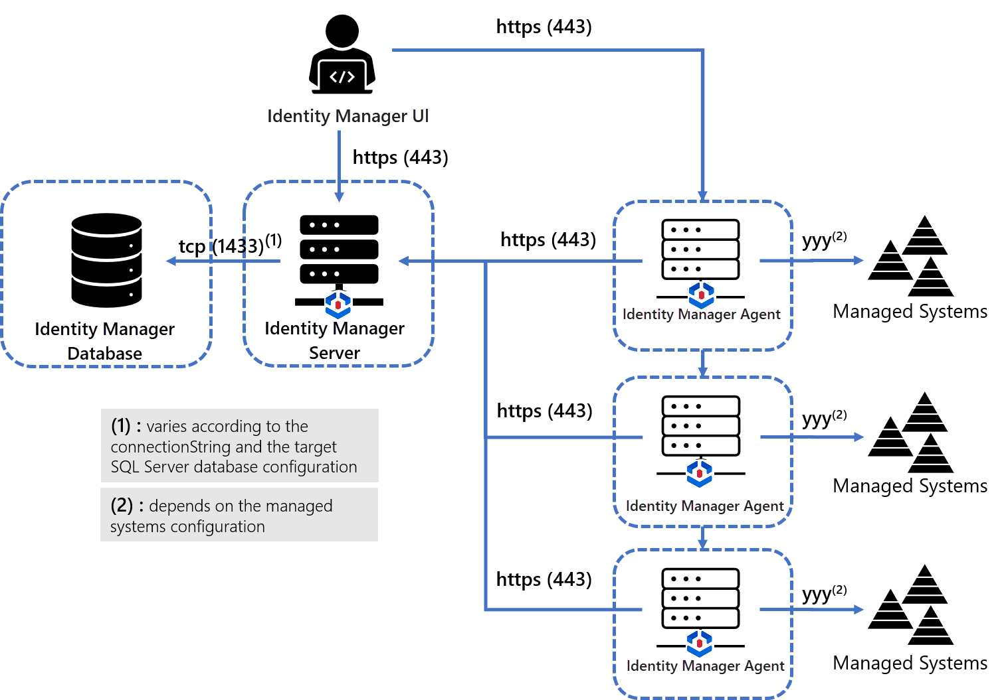
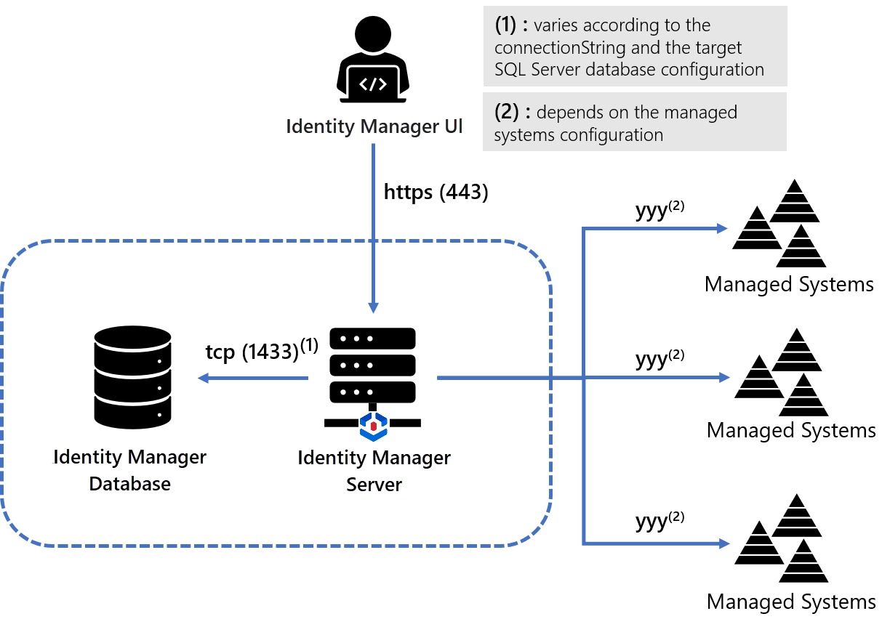

Overview
This section will give you an overview of Identity Manager's components, their requirements and constraints, and possible interconnection schemes. At the end of this section, you should be able to choose the installation setup that fits best your organization's needs.
Components and Data Flow

Components
Identity Manager's solution includes at least three components.
1. Server
One server handles all of Identity Manager's computing needs, internal database management and serves the UI as a web application accessible through a browser.
The SaaS offering hosts the Identity Manager Server in the Cloud. This means that the server needs not be installed within a Identity Manager SaaS installation.
2. Database
One database stores Identity Manager's data.
With the SaaS offering, the Identity Manager Database is hosted in the Cloud and needs not be installed.
The port used to access the database depends on the database configuration and the connectionString set in the technical configuration. See the Network Configuration topic for additional information.
3. Agents
One or several agents perform synchronization and provisioning to/from the managed systems.
Data flow
Identity Manager needs the following data flows to be enabled:
-
The Server requires opening connections to the Database.
-
The Agents require opening HTTPS connections to the Server.
-
The Agents require accessing managed systems.
-
All end-users' browsers require opening HTTPS connections to the Server.
-
All end-users' browsers require accessing the authentication providers. See the Install the Server topic for additional information.
-
Some end-users' browsers require opening HTTPS connections to the Agents.
These connections are used to launch
Jobsor use theReset Passwordcapabilities of some connectors. This requirement only applies to a few specific administrator type profiles. -
The Server and the Agent both need to access an SMTP server to Send Notifications .
SaaS vs. On-Premise
Identity Manager comes in two flavors: SaaS and On-Premise.
-
The SaaS offering only requires the Agent to be installed on your organization network.
-
The On-Premise offering requires the Agent, the Install the Server, and the Install the Database to be installed.
See the Install the Agents topics for additional information.
Hosting Hardware
Depending on the existing network infrastructure and constraints, Identity Manager's components can be organized in several ways.
Database and Servers
The Identity Manager Database can be installed on the same workstation as the Identity Manager Server or run on a separate machine. The second approach is recommended.
Server and Agents
The Identity Manager Server and the Agents can be spread between several workstations. See the Install the Agents topics for additional information.
Two scenarios unfold:
1. The server and agents are installed on separate workstations
This approach is useful when managed systems need to run on separate and isolated networks.

2. The Server and one Agent are installed on the same workstation
In that case, the Identity Manager Agent can run directly within the Identity Manager Server process. The hosting workstation would only host a Identity Manager Server process (with the integrated agent) and no separate agent needs to be installed. The database could be installed on the same workstation or on a separate one.

Authentication
End-users will be able to access Identity Manager after authentication. Several authentication methods are available. See the Install the Server topic for additional information.
Email Server
Identity Manager sends notifications to users by email. An email server will have to be set up for the Agent and the Server. See the Send Notifications topic for additional information.
Before you check out the installation steps, make sure that all the Requirements are met.